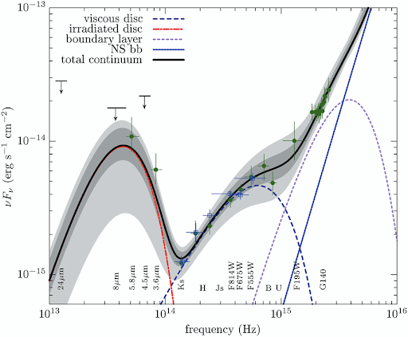

PULSARS
- June 11, 2024
- Admin
- 3 Comments
Introduction
Pulsars, a unique class of cosmic objects, were first discovered through their extraordinarily regular pulses of radio waves. Some pulsars emit short rhythmic bursts of visible light, X-rays, and gamma radiation, while others, known as “radio-quiet” pulsars, emit only at X- or gamma-ray wavelengths.
Characteristics of Pulsars
Pulsars are rapidly spinning neutron stars, extremely dense stars composed almost entirely of neutrons. They have a diameter of only 20 km (12 miles) or less. Pulsar masses range between
1.18 and 1.97 times that of the Sun, but most pulsars have a mass 1.35 times that of the Sun.
A neutron star is formed when the core
of a violently exploding star, called a supernova, collapses inward and becomes compressed together. Neutrons at the surface of the star decay into protons and electrons. As these charged
particles are released from the surface, they enter an intense magnetic field that surrounds the star and rotates along with it. Accelerated to speeds approaching that of light, the particles
give off electromagnetic radiation by synchrotron emission. This radiation is released as intense beams from the pulsar's magnetic poles.
Discovery of Pulsars
Antony Hewish and Jocelyn Bell, astronomers working at the University of Cambridge, first discovered pulsars in 1967 with the aid of a radio telescope specially designed to record very
rapid fluctuations in radio sources. Subsequent searches have resulted in the detection of about 2,000 pulsars. A significant percentage of these objects are concentrated toward the
plane of the Milky Way Galaxy, the enormous galactic system in which Earth is located.
Rotation and Period Changes
Pulsars exhibit considerable variation in the length of their periods—i.e., the intervals between successive pulses. The period of the slowest pulsar so far observed is about 11.8
seconds in duration. The pulsar designated PSR J1939+2134 was the fastest known for more than two decades. Discovered in 1982, it has a period of 0.00155 seconds, or 1.55 milliseconds,
which means it is spinning 642 times per second. In 2006 an even faster one was reported: known as J1748−2446ad, it has a period of 1.396 milliseconds, which corresponds to a spin rate
of 716 times per second.
These fast pulsars are known as millisecond pulsars. They form in supernovae like slower-rotating pulsars. However,
millisecond pulsars often occur in binary star systems. After the supernova, the neutron star accretes matter from its companion, causing the pulsar to spin faster.
Period Changes and Precise Clocks
Careful timing of radio pulsars shows that they are slowing down very gradually at a rate of typically a millionth of a second per year. The ratio of a pulsar’s present period to the
average slowdown rate gives some indication of its age. This so-called characteristic, or timing, age can be in close agreement with the actual age. For example, the Crab Pulsar,
which was formed during a supernova explosion observed in 1054 CE, has a characteristic age of 1,240 years; however, pulsar J0205+6449, which was formed during a supernova in 1181 CE,
has a characteristic age of 5,390 years.
Because pulsars slow down so gradually, they are very accurate clocks. Since pulsars also have strong gravitational fields,
this accuracy can be used to test theories of gravity. American physicists Joseph Taylor and Russell Hulse won the Nobel Prize for Physics in 1993 for their study of timing
variations in the pulsar PSR 1913+16.
Pulsars in Different Wavelengths
Some pulsars, such as the Crab and Vela pulsars, are losing rotational energy so precipitously that they also emit radiation of shorter wavelength.
The Crab Pulsar appears in optical photographs as a moderately bright (magnitude 16) star in the centre of the Crab Nebula. The star also produces regular pulses of X-rays
and gamma rays. The Vela Pulsar is much fainter at optical wavelengths (average magnitude 24) and was observed in 1977 during a particularly sensitive search with the large
Anglo-Australian Telescope situated at Parkes, Australia. It also pulses at X-ray wavelengths. The Vela Pulsar does, however, give off gamma rays in regular pulses and is the
most intense source of such radiation in the sky.

Current Research and Future Prospects
In January 1997 a 13-beam receiver was installed on the Parkes radio telescope. This receiver, the multibeam receiver, was initially built to search for galaxies but
has been used by many astronomers in their search for pulsars. In an investigation that has just been completed, pulsar astronomers from all over the world have
collaborated in a search for pulsars in the plane of our Galaxy and have discovered more than 700 pulsars.
Astronomers
using the Parkes radio telescope have discovered a pulsar in orbit with another pulsar. This has caused great excitement in the astronomical community because these pulsars
allow theories of gravity to be tested with phenomenal accuracy.
The SKA (Square Kilometre Array) will be one of the next generation radio telescopes. It will have far
greater sensitivities than any current radio telescope because its large total collecting area will be one square kilometre. This will allow much fainter pulsars to be seen.
Astronomers are hoping that this new telescope will allow them to discover a pulsar orbiting a black hole. If found, this will be the most extreme pulsar system known. It will
enable more general relativity tests to be done and alternative theories of gravity to be investigated. The SKA will also enable astronomers to find pulsars in distant galaxies.
Conclusion
Pulsars, with their unique characteristics and behaviours, have opened up new avenues for astronomical research and understanding. They serve as cosmic laboratories, allowing
scientists to study extreme states of matter, test fundamental theories of physics, and probe the interstellar medium. As technology advances and more powerful telescopes are
developed, the study of pulsars is expected to continue yielding exciting discoveries about our universe.